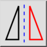

Snu horisontalt
Verktøylinje/ikon:


Meny: Endre > Snu horisontalt
Snarvei: F, H
Kommandoer: fliphorizontally | fh
Dette er en automatisk oversettelse.
Verktøylinje/ikon:


Denne funksjonen vender (speiler) det gjeldende utvalget horisontalt.